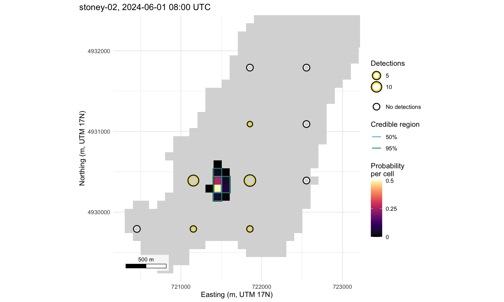

detfield turns the detections of a fixed acoustic receiver array into hourly location surfaces: for each tagged animal and hour, the probability that the animal was in each water cell. It takes a range model you fitted, a depth raster of the water body, the receiver deployments, the detections and the tag delays, in the column names the positionR packages share. Each hour is estimated on its own, with no movement model (the model).
Install
# install.packages("remotes")
remotes::install_github("jakebrownscombe/detfield")The articles are on the package website. One of them, Position fish from a cleaned detection set, also needs the detqc R package.
To install all four positionR packages at once, see the positionR landing page.
Example
The Stoney Lake example has 70 receivers and a range model. One simulated animal is positioned here from one hour of its detections.
# Attach detfield and build the Stoney Lake field from the example's curve
library(detfield)
lake <- terra::rast(system.file("extdata", "stoney_depth.tif",
package = "detfield"))
curve <- de_logistic(d50 = c(250, 750), d05 = c(500, 1500), depth = c(1, 35))
field <- de_field(water_distances(lake, stoney_track$receivers),
de_model(curve, sigma = list(station_hour = 0)))
#> 194 of 7,669 receiver-cell pairs with p >= 0.05 have land on the
#> straight line between them; with blocked = 0 the curve is read on
#> them as if the line were clear. See `blocked` in ?de_model.
# Position stoney-02 from its detections between 08:00 and 09:00 UTC
dets <- subset(stoney_track$detections, animal_id == "stoney-02" &
format(datetime, "%d %H", tz = "UTC") == "01 08")
counts <- bin_detections(dets, stoney_track$receivers, stoney_track$tags)
surface <- location_surface(counts, field)
plot(surface)
Location surface of stoney-02 for 08:00 to 09:00 UTC on 1 June 2024, from its 29 detections at 5 receivers, on 100 m water cells.
The 95% credible region of the hour holds 6 water cells.
Articles
- Fish positioning with detection range information, the Get started page: a range test counted and fitted, the field built, and five animals positioned by the hour.
- Range models: bring your own, or start from two distances reads a model that varies with depth and date into a field for each day.
- Hourly positions against the true track scores the hourly positions, regions and use map against simulated tracks.
- Habitat selection: depth use from hourly positions measures how far the depth of position draws falls from the true depth, and what that does to a use-availability coefficient, for animals with a known preference.
- Position fish from a cleaned detection set: a detection set cleaned by the detqc R package handed to detfield.
The suite
detfield is one of the four positionR packages, which share one set of column names, one range model and one lake for their examples, Stoney Lake.

- positionR, the suite
- detqc: read, check and filter detections.
- detfield: detection fields and positions.
- arraydesign: design and test the performance of tracking systems.
- arraydesignR: arraydesign as a point-and-click application.
detqc exports the same five figure functions as detfield. The copies are identical, so the masking message R prints when both packages are attached can be ignored.
Cite
Brownscombe JW (2026). positionR: tools for acoustic telemetry studies. R package version 2.0.0, https://jakebrownscombe.github.io/positionR/.
Brownscombe JW (2026). detfield: Detection Fields and Location Surfaces for Acoustic Telemetry. R package version 0.1.1, https://jakebrownscombe.github.io/detfield/.